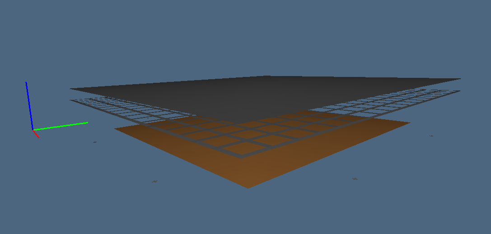
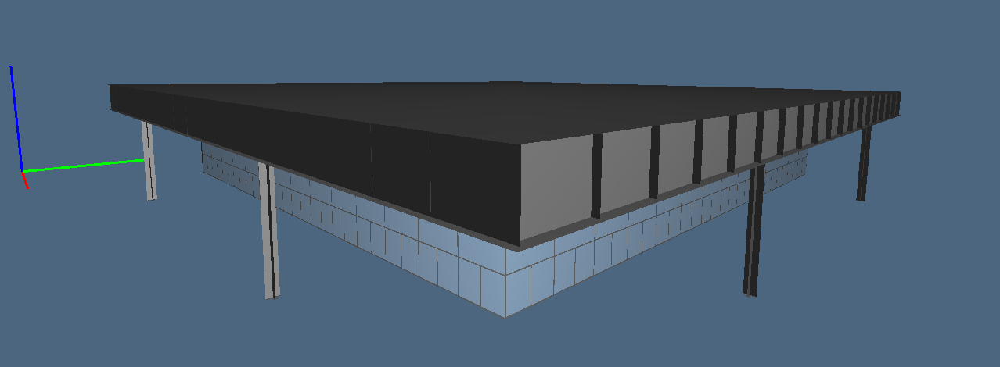
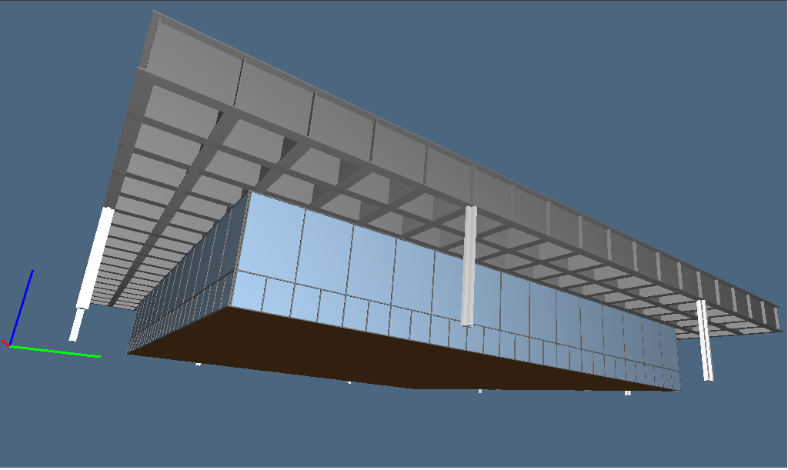
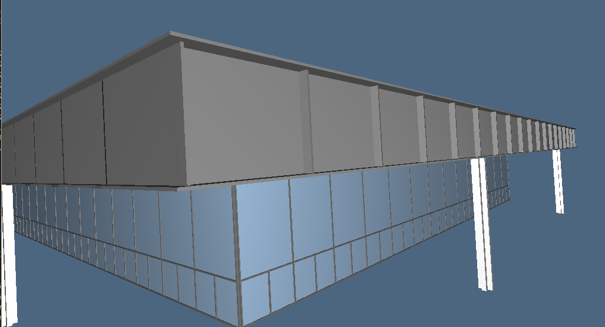
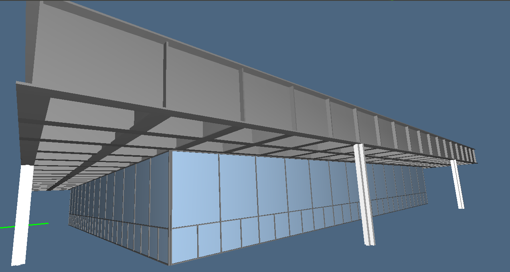
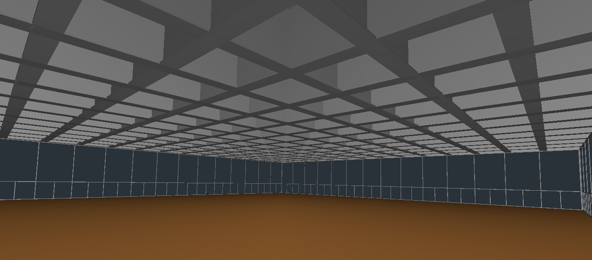
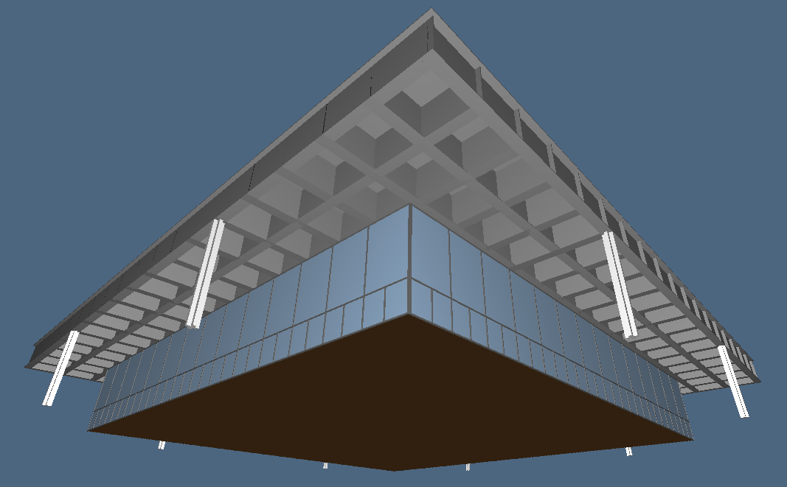
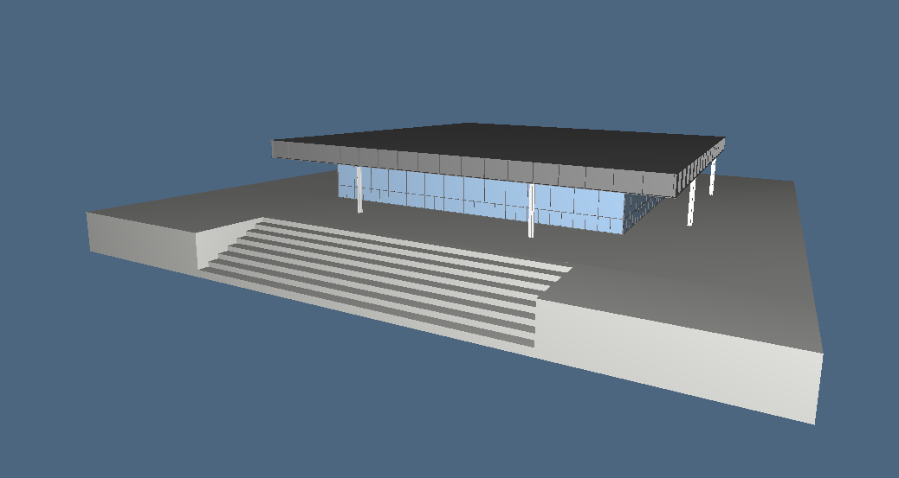
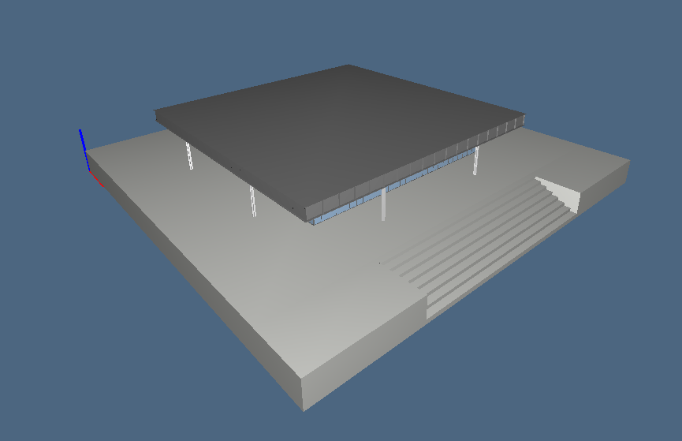
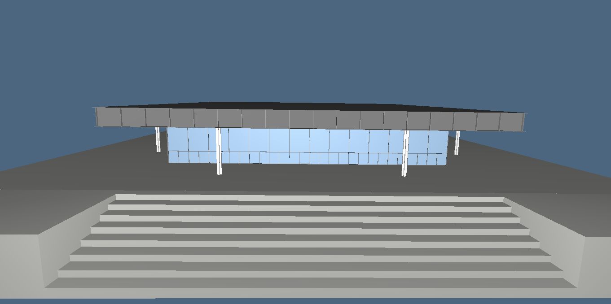

During my work I have tried to attain strictly to the guidelines provided by the exercises.
After an initial stage of projectation I moved over to the 2.5D model based on the horizontal partitioning. I focused on the groundfloor of the building and ignored the basement.

Due to the lack of horizontal surfaces this early submodel is very poor, though I took advantage laying out the roof grid.
Surfaces belonging to a one same physical object are coloured alike. Color choices have been made primarily in pursuit of fidelty.
I went ahead with the vertical partitioning (exercise 2). This submodel came out remarkably richer than the previous one: once the models were assembled, the resulting 2.5D building was solely lacking in volumetric details.

Step 3 consisted in adding volume to the significat elements.





As requested by the optional exercise (number 4), I have introduced the stairs. Though, not knowing where to settle the stairs within the building I decided to actually introduced 'steps'. In order to do so I used a base to mount the building atop, making it reachable through the steps. This is indeed a collocation resambling the real collocation of the building.



All source codes are available below:
{kind=link}
{kind=link}
{kind=link}
{kind=link}
{kind=link}